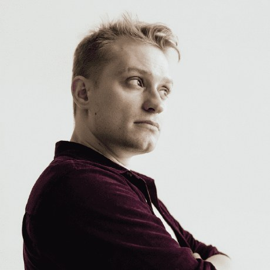

Сайты и страницы
Понятная презентация компании, специалиста или продукта — с ясной структурой и аккуратным дизайном.
- Портфолио и сайты-визитки
- Продающие страницы
- Адаптация под телефон
Помогаю превратить сложную задачу в понятный сайт, веб-приложение или рабочий инструмент для бизнеса.

Разрабатываю собственные продукты и экспериментальные проекты — от интерфейса до работающей версии.
Визуальное пространство для связанных заметок, идей и материалов.
Рабочая среда для языковых школ: ученики, занятия, расписание и процессы.
Интерактивные исследования звука, алгоритмов и генеративных систем.
Работаю небольшими понятными этапами: сначала разбираемся в задаче, затем собираем решение и доводим его до запуска.
Понятная презентация компании, специалиста или продукта — с ясной структурой и аккуратным дизайном.
Инструменты, которые упрощают ежедневную работу и собирают нужные процессы в одном месте.
Убираю повторяющиеся ручные действия и связываю сервисы в надёжный рабочий процесс.
Я Дмитрий Щукин — разработчик цифровых продуктов и композитор. Мне интересно соединять инженерную точность, выразительный дизайн и живые человеческие задачи.
В работе важны ясная коммуникация, надёжная основа и результат, которым удобно пользоваться. Берусь за проекты целиком или подключаюсь к конкретному этапу.
Расскажите, что хотите сделать и где сейчас застряли. Вместе найдём понятный следующий шаг.
Написать мне на GitHub